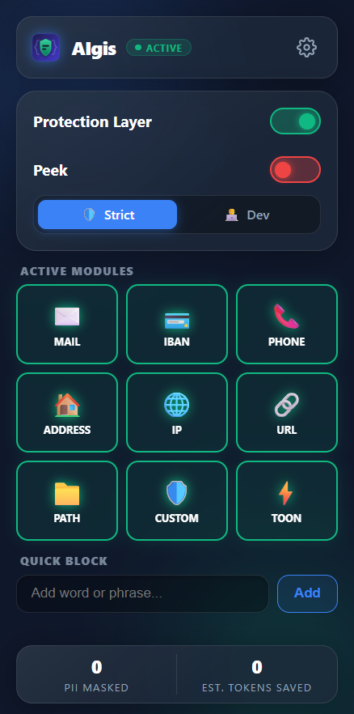

A browser extension that automatically masks Personally Identifiable Information (PII) and optimizes tokens before your prompts ever leave your device.
AIgis acts as Client-Side Privacy Firewall for LLMs in scenarios where privacy is a concern (“Shadow AI”), particularly when individuals use third-party platforms to interact with LLMs.
AIgis operates completely locally. It scans your prompt for Emails, IBANs, Phone
Numbers, Addresses,
IP Addresses, and Paths. All sensitive data is replaced with unique, traceable placeholders (e.g.
[EMAIL_1]) before the prompt is sent to the LLM-platform. You choose which data to
mask and which to let through.
When the AI generates a response using your placeholders, AIgis automatically injects your real data back into the DOM seamlessly. Only you can see your sensitive data, without the AI ever knowing what it was.
Block extremely specific proprietary terms. Add code-names like "Project Apollo" to your dictionary, and AIgis will mask them across all supported platforms instantaneously.
Token Optimized Object Notation (TOON) compresses heavy JSON and code objects natively in your clipboard before you paste them into LLMs. Relying on the information provided in the TOON documentation, it reaches 74% accuracy (vs JSON's 70%) while using ~40% fewer tokens in mixed-structure benchmarks across 4 models.
Privacy isn't just a feature; it's our architecture. AIgis utilizes a strict dual-storage model.
Your highly sensitive data and PII Vault mappings are physically air-gapped to your local hard drive
(chrome.storage.local), while non-sensitive preferences safely sync across your own
personal devices. By processing all redaction logic locally, we eliminate the need for third-party
cloud APIs.
While your personal preferences automatically sync across your own devices via Chrome's native infrastructure, you can also manually export your AIgis configuration as JSON. Easily distribute organizational code-words and redaction lists to your entire team with a single click!
AIgis natively intercepts and protects data on the following platforms:
Manage your core masking settings instantly from the extension popup. See what modules are active, check real-time protection status, and toggle features without breaking your workflow.

Always know what is being masked. The un-intrusive badges on supported AI-websites gives you a live overview of exactly what data is being masked/shielded on the current chat. You can toggle on Peek-Mode to view the original text, either permanently or temporarily.
Control exactly which modules are active and switch between strict or developer modes. Disable specific PII masks if needed, or import and export Custom Dictionary libraries with your entire team via JSON synchronization.
Track exactly how many tokens you've saved and monitor how many sensitive PII elements have been intercepted in your chats over time. Your data stays completely local, but your privacy impact is visualized beautifully.
We are abstracting the core logic engine of AIgis into a high-performance Rust library, compiled to WebAssembly.
Soon, you can integrate the AIgis data protection pipeline directly into your own applications. Through Extism, we will provide bindings for a wide variety of programming languages.
Star the Repo for Updates